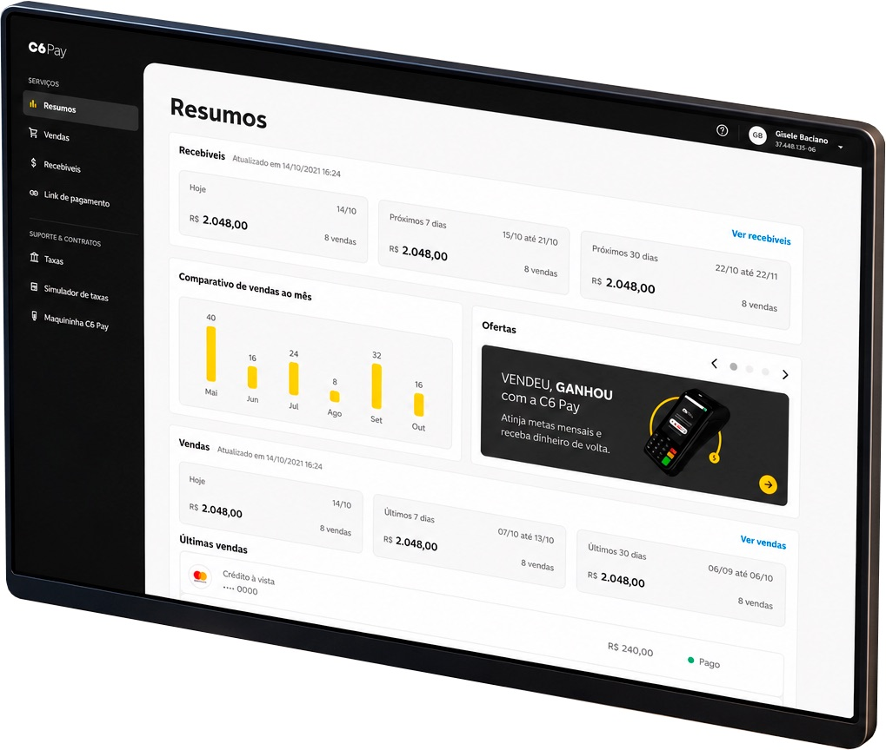
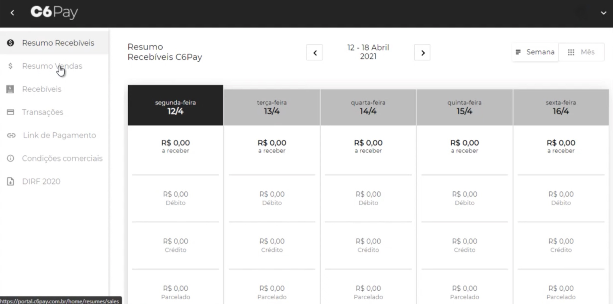
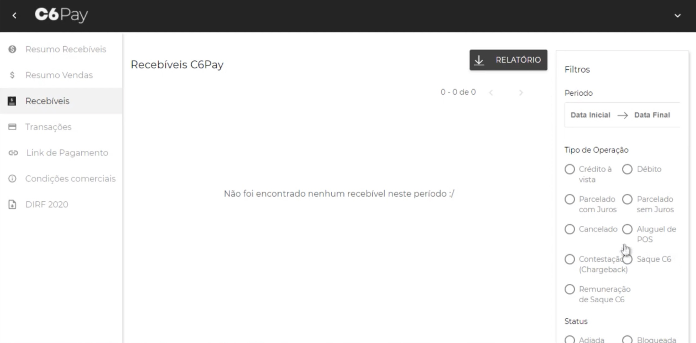
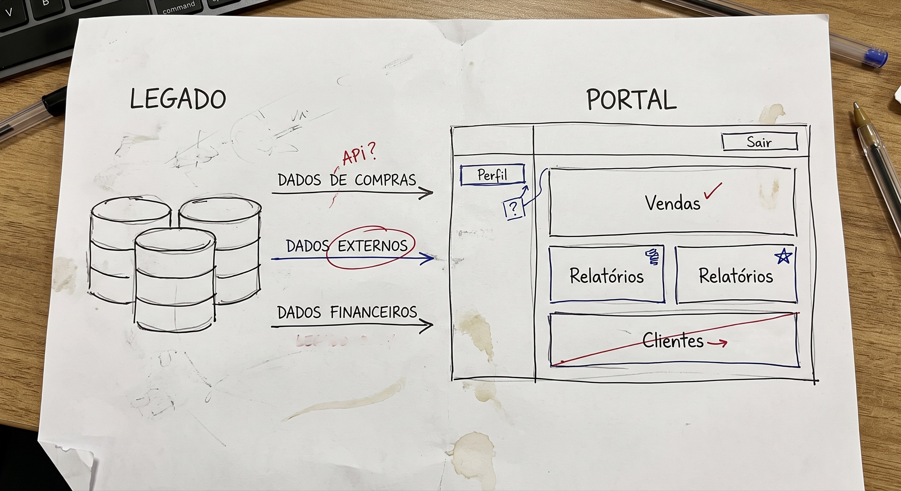
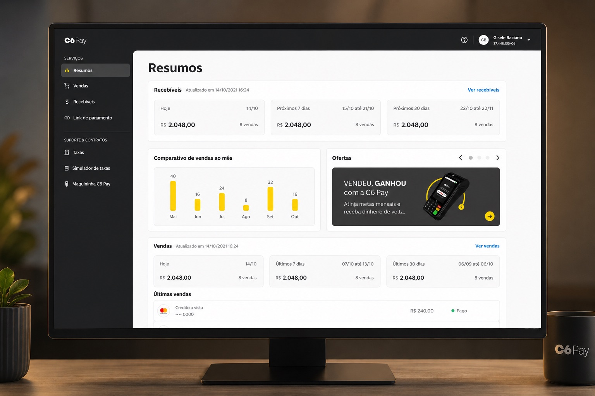
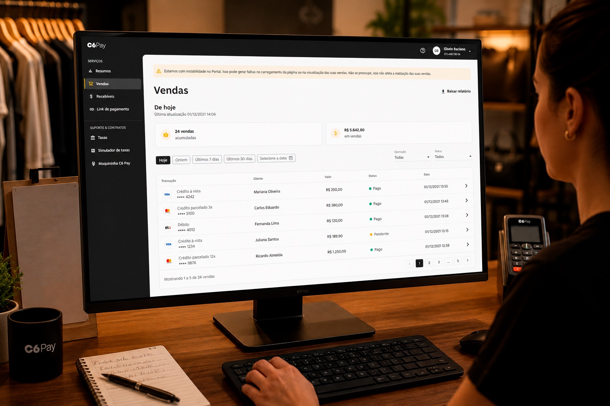

PayGo · C6 Bank · 2020–2021
Portal de gestión para comerciantes C6 Pay
El portal de gestión de C6 Pay aún arrastraba la estructura y el lenguaje de PayGo, construida para un contexto previo a la integración con C6 Bank. El rediseño reorganizó la navegación y la presentación de información para hacer más claro el seguimiento de la operación financiera por parte de los comerciantes dentro del nuevo ecosistema del banco.

Una operación B2B entre PayGo y C6 Bank
Con la integración entre PayGo y C6 Bank, surgió la necesidad de alinear la experiencia del portal con los estándares del banco y preparar la plataforma para su evolución. Además de la modernización visual, el producto acumulaba problemas de usabilidad, navegación y comunicación que afectaban las tareas esenciales de los comerciantes y aumentaban la demanda de soporte.


Experiencia del usuario
- Navegación poco intuitiva
- Arquitectura de información confusa
- Baja priorización de la información financiera
- Exceso de carga cognitiva en las pantallas
- Flujos largos para tareas recurrentes
Impacto en el negocio
- Alto volumen de consultas operativas
- Dependencia frecuente del soporte
- Baja eficiencia en la ejecución de tareas
- Inconsistencia con los estándares de C6 Bank
- Base limitada para la evolución del producto
Entendiendo las posibilidades con ingeniería
Como el equipo era pequeño, teníamos contacto diario con ingeniería. Aproveché esta proximidad para entender cómo llegaban los datos al portal, cuáles eran las limitaciones del sistema legado y, junto a la PM, definir qué valía la pena mejorar en esta primera fase. A partir de estas conversaciones, priorizamos dos frentes para el rediseño.

Ayudar con el cierre diario
Al analizar los tickets de soporte, identifiqué que buena parte de las dudas surgían durante el cierre de caja. Los comerciantes tenían dificultad para localizar e interpretar la información financiera en el portal. Este se convirtió en el problema principal del proyecto.
Priorizar lo que realmente importaba
En la rutina diaria del mostrador, el usuario necesitaba saber rápidamente su situación financiera del día. Reorganicé la interfaz para dar visibilidad a la información esencial y hacer esta respuesta inmediata, sin depender de tablas y filtros.
Transformando datos en una visión financiera clara
Con las prioridades definidas, reorganicé la interfaz para facilitar la lectura de la información financiera en el día a día. La solución sustituyó tablas extensas por una estructura más visual, reduciendo la necesidad de interpretar datos técnicos para realizar el cierre de caja.
Resumen financiero
Reemplacé el calendario semanal rígido del sistema legado por tarjetas consolidadas con los principales indicadores financieros, permitiendo visualizar el saldo total sin necesidad de calcular columnas diarias.
Organización de la información
Organicé la interfaz para reflejar la rutina del comerciante. Las cuentas por cobrar quedaron destacadas en la parte superior de la pantalla, ofreciendo una visión del dinero que aún ingresaría, mientras que las ventas del día permanecieron justo debajo para apoyar el cierre de caja.
Lenguaje orientado a la operación
Revisé la organización de menús, filtros y mensajes para hacer la navegación más intuitiva. La comunicación pasó a privilegiar el contexto de uso del comerciante, con períodos, estados y feedbacks más claros a lo largo de la experiencia.
Una visión clara de la operación financiera
El portal tenía dos áreas distintas de resumen financiero que presentaban información complementaria, pero requerían navegar entre pantallas para componer un panorama completo. Con apoyo del equipo de CX, mapeé las dudas más frecuentes de los comerciantes durante el cierre de caja y consolidamos esta información en una única vista, priorizando los indicadores más relevantes para la operación diaria de la terminal C6.
Reorganicé la interfaz para aprovechar mejor el espacio disponible, reducir elementos repetitivos y destacar solo la información necesaria para el cierre de caja. Con esto, el comerciante pudo consultar rápidamente su posición financiera en la primera pantalla, reduciendo la necesidad de recorrer distintas secciones del portal.

Facilitando la revisión del historial de ventas
El análisis de los tickets de soporte mostró que muchos comerciantes usaban el historial de ventas para verificar el cierre de caja. El desafío era reducir el tiempo dedicado a esta verificación y facilitar la identificación de discrepancias entre transacciones.
Para ello, reorganicé la experiencia priorizando las consultas más frecuentes, con filtros rápidos por período y refinamientos por estado y operación. También dejé el estado de cada transacción de forma más explícita y agregué la información de última actualización de datos, brindando más confianza durante la validación del cierre de caja.

Cómo fundamentamos las decisiones de diseño
El rediseño no se basó únicamente en el análisis de la interfaz existente. A lo largo del proyecto, reuní distintas perspectivas para entender mejor el problema, validar hipótesis y alinear las decisiones con el resto del equipo.
CX
Aproximación con el equipo de atención al cliente para entender el perfil de los comerciantes, las dudas más recurrentes y los principales motivos de contacto con el soporte.
Ingeniería
Mapeo del funcionamiento del sistema legado para entender cómo llegaban los datos al portal. Muchas métricas requerían cálculo en el front-end en lugar de venir listas desde el back-end, lo que era aceptable en algunos casos, pero para métricas críticas necesitaba alinearme con ingeniería antes de definir la prioridad.
Análisis de referentes
Análisis de productos como Stone, Stripe y PagSeguro para entender cómo el mercado organiza la información financiera y construir una base de referencia para las decisiones de diseño.
Pruebas con usuarios
Validación de prototipos con cinco comerciantes para verificar que las principales decisiones realmente facilitaban la operación antes del desarrollo.
Reducción de soporte y autonomía en el desarrollo
Después de que el portal entró en producción, las dudas sobre el cierre de caja prácticamente desaparecieron del soporte. Para entender si el cambio también se reflejaba en el comportamiento de los usuarios, analicé el GA junto con la PO. El tiempo promedio en la pantalla de ventas cayó casi a la mitad. En paralelo, adaptamos los componentes del sistema de diseño de C6 Bank a las limitaciones técnicas de PayGo y estructuramos una biblioteca propia para que el equipo pudiera seguir desarrollando el producto con mayor consistencia.